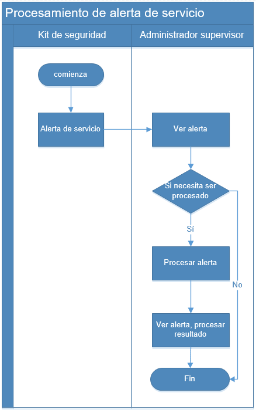

Procedimiento de servicio de alerta de dispositivo describe principalmente la alerta y el procedimiento por falla de dispositivo
durante el uso de kit de seguridad. El diagrama de flujo se muestra como
Fig 3 Procedimiento de servicio de alerta de dispositivo.

Fig 3 Procedimiento de servicio de alerta de dispositivo
La descripción principal del proceso es el siguiente：
|
1. |
Se produce un fallo del dispositivo durante el uso del dispositivo y se genera una alerta del dispositivo. |
|
2. |
El supervisor recibe la alerta y examina la información de alerta y información monitoreada del vehículo. Por favor consulte
Alerta de dispositivo. |